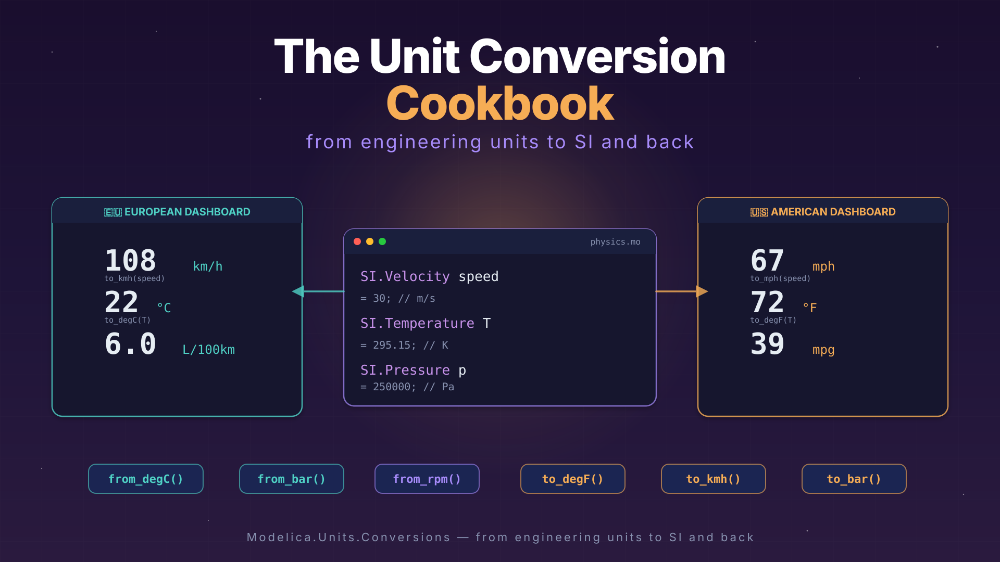

The Unit Conversion Cookbook
(2/3) This one is the second of a series of three articles about SI units beyond SI. Part 1 was about units and quantities in Modelica. Today: how to convert between the SI units that Modelica loves and the non-SI units that the real world loves. 🍳

I hope you’ve got your preferred drink in hand ☕️🫖💧
In the previous article, we dressed our variables in proper SI types. Temperature in Kelvin, pressure in Pascal, velocity in m/s. Our models are now clean, self-documenting, and NASA-proof. 🚀
And then your colleague sends you a datasheet. Temperature: 72°F. Pressure: 14.5 psi. Flow rate: 3.2 gallons per minute.
Kevin who? 😅
The real world doesn’t speak SI. Engineers think in °C, bar, RPM, km/h. Sensor datasheets come in mA, psi, inches of mercury. Your American colleagues still use °F and wonder why you’re confused. 😅
So how do you bridge the gap between “what Modelica wants” and “what (some) humans use”? That’s today’s menu. 🍳
The easy way: displayUnit (recap)
Before we dive into the toolbox, let’s quickly revisit something from last time. You already know displayUnit:
SI.Temperature T(displayUnit="degC") = 300 "Boiler temperature";This tells your tool: “store and compute in Kelvin, but show me °C in plots and GUIs.” The value in the equation is still 300 K — displayUnit is purely cosmetic. It changes nothing in the math. 💅
And that’s both its strength and its limit:
- ✅ Great for viewing results in familiar units — your plots show °C, bar, RPM instead of K, Pa, rad/s
- ❌ Not great when you actually receive data in non-SI units and need to convert it for the equations
If your sensor sends you 2.5 bar and you write p = 2.5, that’s 2.5 Pascal. Your model won’t complain — it’ll just produce nonsense results. displayUnit doesn’t convert anything. You need an actual conversion function.
Enter the Conversions package. 🧰
The right way: Modelica.Units.Conversions
The Modelica Standard Library comes with a package specifically for this: Modelica.Units.Conversions. It contains a set of functions that convert values — not just display labels — between SI and common engineering units.
The naming convention is simple:
to_degC(T_in_kelvin)→ converts from SI to engineering unitfrom_degC(T_in_celsius)→ converts from engineering unit to SI
⚠️ Read that twice. to_degC takes Kelvin in, gives °C out. from_degC takes °C in, gives Kelvin out. The name describes the target, not the source. It trips people up.
import Modelica.Units.Conversions.*;
import Modelica.Units.SI;
SI.Temperature T_boiler = from_degC(95) "95°C → 368.15 K";
SI.Pressure p_tank = from_bar(2.5) "2.5 bar → 250000 Pa";
SI.Angle tilt = from_deg(15) "15° → 0.2618 rad";See what’s happening? The equations work in SI — Kelvin, Pascal, radians — but we wrote the values in the units we think in. No mental arithmetic. No “was that 273.15 or 273?” moments at 2am. 😅
And when you need to go the other way — say, to log a result for a human-readable report:
Real T_display = to_degC(T_boiler) "For logging: back to °C";
Real p_display = to_bar(p_tank) "For logging: back to bar";What’s in the box?
Here are the conversion functions you’ll use most often:
| From SI → Engineering | From Engineering → SI | What it converts |
|---|---|---|
to_degC() |
from_degC() |
K ↔︎ °C |
to_degF() |
from_degF() |
K ↔︎ °F |
to_degRk() |
from_degRk() |
K ↔︎ °Rankine |
to_deg() |
from_deg() |
rad ↔︎ ° |
to_rpm() |
from_rpm() |
rad/s ↔︎ RPM |
to_kmh() |
from_kmh() |
m/s ↔︎ km/h |
to_bar() |
from_bar() |
Pa ↔︎ bar |
to_kPa() |
from_kPa() |
Pa ↔︎ kPa |
to_hour() |
from_hour() |
s ↔︎ h |
to_minute() |
from_minute() |
s ↔︎ min |
to_day() |
from_day() |
s ↔︎ days |
to_litre() |
from_litre() |
m³ ↔︎ L |
to_kWh() |
from_kWh() |
J ↔︎ kWh |
Browse Modelica.Units.Conversions in your tool for the full list. 📦
But wait — there’s also NonSI
You might have noticed a sibling package: Modelica.Units.NonSI. This one doesn’t contain functions — it contains types:
import Modelica.Units.NonSI;
NonSI.Temperature_degC T_sensor = 72 "Sensor reading in °C";
NonSI.Pressure_bar p_gauge = 3.5 "Gauge reading in bar";
NonSI.Angle_deg heading = 45 "Heading in degrees";These are Real types with the unit attribute set to the non-SI unit string (e.g., unit="degC"). They’re useful for declaring variables that genuinely live in non-SI units — for example, inputs from a sensor interface or parameters from a datasheet.
But here’s the thing: if you use a NonSI type in an equation that expects SI, you still need a conversion function. The type tells the tool what unit the variable is in, but Modelica won’t auto-convert for you:
import Modelica.Units.Conversions.*;
import Modelica.Units.NonSI;
import Modelica.Units.SI;
NonSI.Temperature_degC T_sensor = 72 "From the sensor, in °C";
SI.Temperature T_model = from_degC(T_sensor) "Convert to K for equations";Think of NonSI types as labels and Conversions functions as translators. You usually need both together.
The car dashboard — a full example
Let’s put it all together with something everyone can relate to: a car dashboard. 🚗
You’re driving in Germany — speed in km/h, temperature in °C, fuel consumption in L/100km. Your American colleague drives the same car in Texas — mph, °F, mpg. Same physics, different numbers on the display.
Let’s model a simple dashboard that takes the “physics” (SI) and produces both displays:
model CarDashboard "Same car, two dashboards"
import Modelica.Units.SI;
import Modelica.Units.Conversions.*;
// The physics — always in SI
SI.Velocity speed = 30 "Vehicle speed [m/s]";
SI.Temperature T_outside = from_degC(22) "Outside temperature";
SI.VolumeFlowRate fuel_rate(displayUnit="l/h") = 1.8e-6
"Fuel consumption rate [m3/s]";
// European dashboard 🇪🇺
Real speed_kmh = to_kmh(speed) "Speedometer [km/h]";
Real T_celsius = to_degC(T_outside) "Temperature [°C]";
Real L_per_100km = if speed > 0 then
fuel_rate / speed * 1e8 else 0 "Fuel economy [L/100km]";
// American dashboard 🇺🇸
Real speed_mph = speed * 3.6 / 1.609 "Speedometer [mph]";
Real T_fahrenheit = to_degF(T_outside) "Temperature [°F]";
Real mpg = if fuel_rate > 0 then
speed / fuel_rate * 2.352e-7 else 0 "Fuel economy [mpg]";
end CarDashboard;Let’s unpack what’s going on:
The physics block uses SI exclusively. Speed is in m/s, temperature in K, fuel flow in m³/s. This is where the “real” model lives. The equations don’t care about dashboards.
The European dashboard uses
to_kmh()andto_degC()— library conversion functions. Clean, readable, no magic numbers.The American dashboard mixes approaches on purpose:
to_degF()from the library for temperature, but manual conversion for speed and fuel economy. Notice how the manual version (speed * 3.6 / 1.609) is harder to read thanto_kmh(speed)? That’s the point. Use the library functions when they exist. 😉
⚠️ The L/100km and mpg conversions don’t have dedicated functions in the MSL — these are compound units that require a bit of arithmetic. This is where custom types and helper functions come in handy. Speaking of which…
The custom way: defining your own types
The MSL covers the most common units. But what about L/100km? Or mmHg (for blood pressure)? Or mL/h (for medical infusion pumps)? The library can’t anticipate every domain.
Good news: creating your own unit type in Modelica is a one-liner. The type keyword lets you define a new type as a specialization of Real with custom attributes:
type FuelConsumption_L100km = Real(unit="l/(100km)", quantity="FuelConsumption");
type Pressure_mmHg = Real(unit="mmHg", quantity="Pressure");
type FlowRate_mLh = Real(unit="ml/h", quantity="VolumeFlowRate");That’s it. You now have types you can use just like SI.Temperature or NonSI.Pressure_bar:
FuelConsumption_L100km consumption = 6.5 "My car on a good day";
Pressure_mmHg blood_p = 120 "Systolic blood pressure";
FlowRate_mLh drip_rate = 50 "Infusion pump setting";Packaging them up
If you have several custom types for a domain, group them in a package — just like the MSL does with Modelica.Units.SI:
package AutomotiveUnits "Units for automotive dashboards"
type Speed_kmh = Real(unit="km/h", quantity="Velocity");
type Speed_mph = Real(unit="mi/h", quantity="Velocity");
type FuelConsumption_L100km = Real(unit="l/(100km)", quantity="FuelConsumption");
type FuelConsumption_mpg = Real(unit="mi/gal", quantity="FuelConsumption");
end AutomotiveUnits;Now your car dashboard model becomes even more self-documenting:
import AutomotiveUnits.*;
Speed_kmh speed_eu = to_kmh(speed) "Speedometer [km/h]";
FuelConsumption_L100km fuel_eu = ... "Fuel economy [L/100km]";Remember when we built a library? This is the same idea — except instead of packaging models, you’re packaging types. And the beauty is that these types carry their unit information with them, so your tool can still do unit checking on your custom units.
💡 Tip: Even if the tool doesn’t enforce your custom unit string, the annotation is still valuable for documentation. A variable declared as
FlowRate_mLhis infinitely more readable thanReal flow "Flow rate". Future-you will thank present-you.
🙋 Common pitfalls
Before we wrap up, a quick survival guide. These are the traps I’ve seen people fall into — sometimes myself included. 😅
Pitfall 1: Confusing from_ and to_
This is the classic. You want to set a temperature of 25°C, so you write:
SI.Temperature T = to_degC(25); // ❌ WRONG — converts 25 K to °C!That gives you −248.15. And assign it to a temperature variable in Kelvin! Not what you wanted. 🥶 and 🙅♂️ (below 0 K ??!! “No can do!”)
The correct version:
SI.Temperature T = from_degC(25); // ✅ Converts 25°C to 298.15 KRemember: from_degC means “I’m giving you °C, convert it from °C to SI.” The name describes where the value comes from, not where it goes.
Pitfall 2: Thinking displayUnit converts
We covered this already, but it bears repeating:
SI.Pressure p(displayUnit="bar") = 2.5; // This is 2.5 Pa, NOT 2.5 bar!If you want 2.5 bar:
SI.Pressure p(displayUnit="bar") = from_bar(2.5); // ✅ This is 250000 Pa, displayed as 2.5 bardisplayUnit is the lipstick. from_bar() is the surgery. Don’t confuse cosmetics with the real thing. 💄
Pitfall 3: Forgetting that temperature is special
Most unit conversions are just multiplication: bar to Pa is ×100000, degrees to radians is ×π/180. Temperature is the exception — it has an offset:
\[T_K = T_{°C} + 273.15\]
This means you can’t just use a factor. And it means temperature differences convert differently than absolute temperatures. A difference of 10°C is also a difference of 10 K — no offset needed. But an absolute temperature of 10°C is 283.15 K. The from_degC function handles absolute temperatures. For differences, you don’t need it.
💡 This is actually why Modelica has a
quantityattribute: both"ThermodynamicTemperature"and"TemperatureDifference"use Kelvin as their unit, but they’re fundamentally different things. A good tool knows the difference.
The END for today
Enough for today. Between last article’s SI types and today’s conversion cookbook, you’re now equipped to handle any unit that the real world throws at you. °F, bar, RPM, mmHg — bring it on.
Next time: we follow these units on their journey out of Modelica and into an FMU. If you’ve read the FMI articles, you know that FMUs are how models travel between tools. But how do tools know that your variable is in bar and not Pascal? That’s Part 3. 🤓
Break is over, go back to what you were doing.
Clem
Next ->
© 2025-2026 Clément Coïc — Licensed under creative commons 4.0. Non-commercial use only.